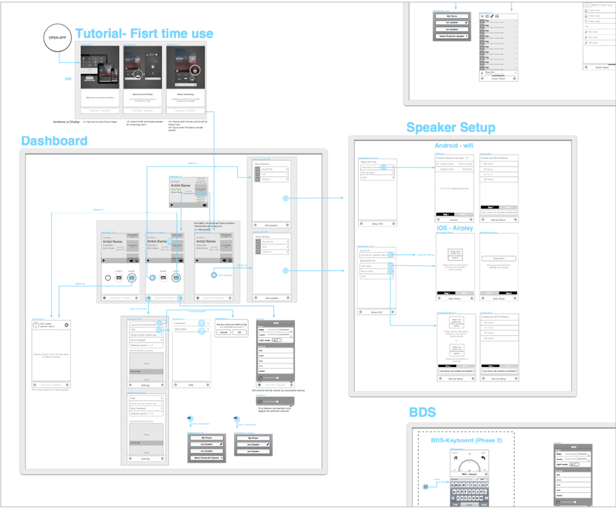
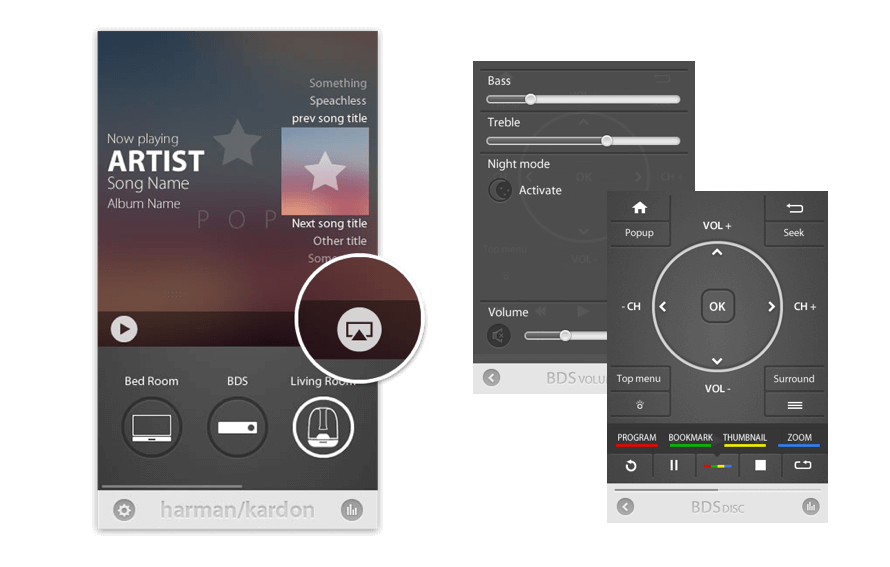

Background
Harman Kardon is a home audio system manufacturer. With the rise of smartphones, mobile-phone support for remote control and streaming services had become a must. In 2012, the Harman Kardon UI/UX design team began developing this application to give users a more simpler, more intuitive, and technologically integrated smarter way to interact with audio products.
Challenges
Because of complex and meticulous nature of the project, detailed knowledge and execution was required. Designers researched and defined interactions for over ten Harmon Kardon products, including the BDS home-audio system and TK, in order to replicate and integrate these functions for mobile-phone remote control.
In addition to the remote control, designers also develop a fully functioning music player integrating into the app. Another challenge was how we could implement a wide variety of setup processes while simultaneously improving on making the navigation, making the end result more intuitive, elegant, and easy to understand.
User Flow
Audio Product Remote Control

Various Device Music Streaming
Integrated Music Player

- Role: UX/ UI Design
- Type：iOS/Android Application